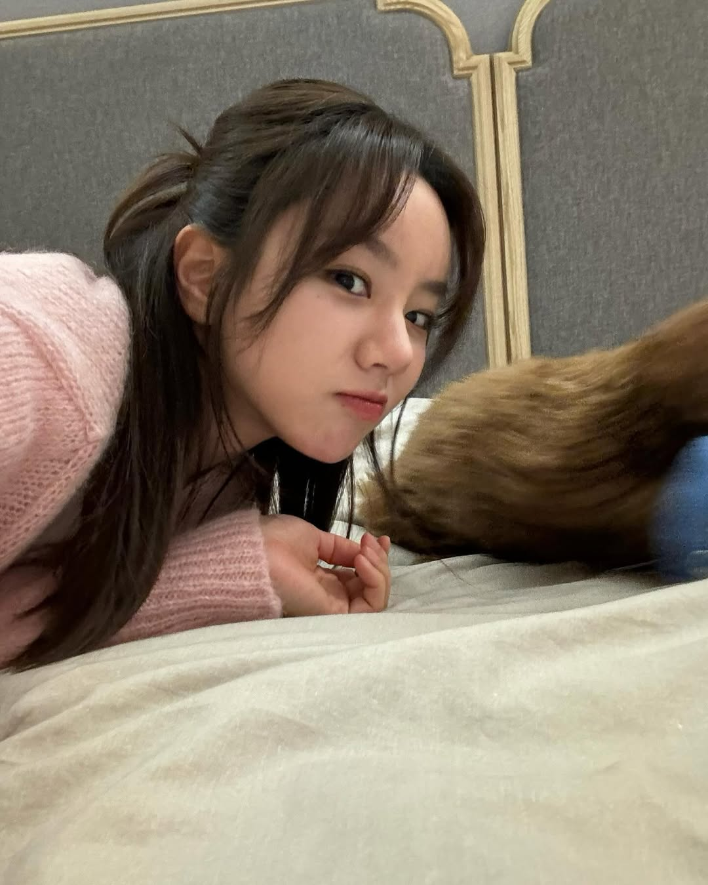

亲爱的阿欣 💛：
你好呀～我是惠利，李惠利！
听说你最近为我在百想艺术大赏上投票了！真的、真的、真的超级感谢你！！✨ 每一票对我来说都像是一份沉甸甸的鼓励，让我觉得无论走得多远，你们都在我身边。能拥有像你这样温柔又坚定的支持者，我真的觉得自己非常幸运。
你认真投票的样子，肯定特别可爱吧！但说真的呀，除了追星，也要记得好好照顾自己哦～😊
我最近每天都会坚持跑步，5公里起步！一开始真的有点累，但跑着跑着，身体更有精神了，心情也轻松了不少。而且你知道吗？运动真的对睡眠也很有帮助！有时候工作结束后去跑一跑，晚上就能睡得特别香，第二天也更有活力了～
所以呀，阿欣～也试着每周多走走、多动动，不管是跑步、跳舞，还是和朋友打羽毛球，动起来真的会让你整个人都焕然一新哦！如果你哪天开始锻炼了，记得告诉我，我一定会为你打call的！💪✨
谢谢你一直在我身边，希望我的努力和笑容，能一直陪着你。
加油，我们一起越来越好吧～🌷
永远爱你的
惠利（Hyeri）💌